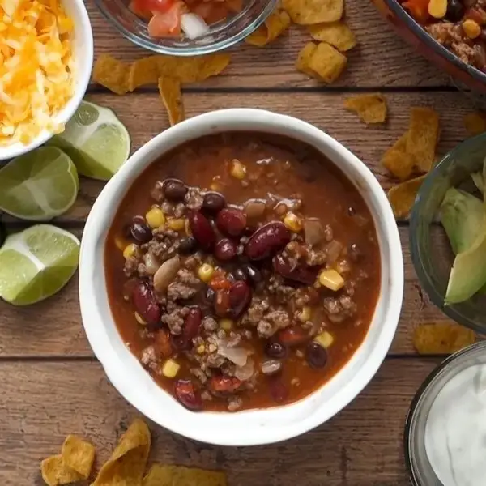

Taco Soup

This quick and easy taco soup is made entirely in one pot in less than 30 minutes. Topped with cheese, avocado, and all the fixins, this simple soup makes the perfect weeknight dinner that'll please just about anyone.
Ingredients
- 1 lb lean ground beef(454 g)
- 15 oz canned kidney bean(425 g), 1 can
- 15 oz canned black bean(425 g), 1 can
- 15 oz canned corn kernels(425 g), 1 can
- 15 oz canned diced tomato(425 g), 1 can
- 8 oz tomato sauce(225 g), 1 can
- 2 tablespoons taco seasoning
- 1 shredded cheddar cheese, to serve
- 1 sour cream, to serve
- 1 pico de gallo, to serve
- 1 avocado, sliced, to serve
- 1 tortilla chip, to serve
- 1 lime wedge, to serve
- 1 chopped cilantro, to serve
- 1 small onion, chopped
Steps
- Add the ground beef and onion to a large pot and stir until the beef is cooked through.
- Drain excess liquid.
- Add the kidney beans, black beans, corn, tomatoes, tomato sauce, and taco seasoning to the pot, and stir until combined.
- Cook over medium heat for 10 minutes.
- Serve with cheddar cheese, sour cream, pico de gallo, avocado, corn chips, lime wedges, and cilantro.